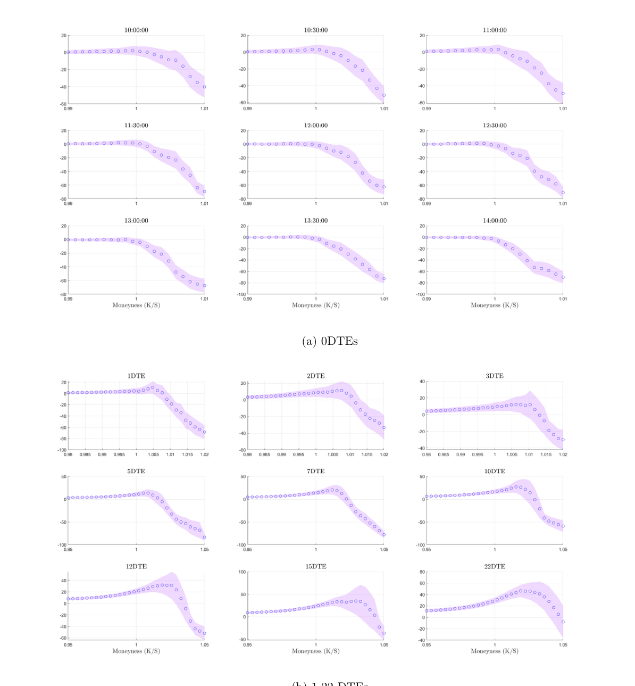
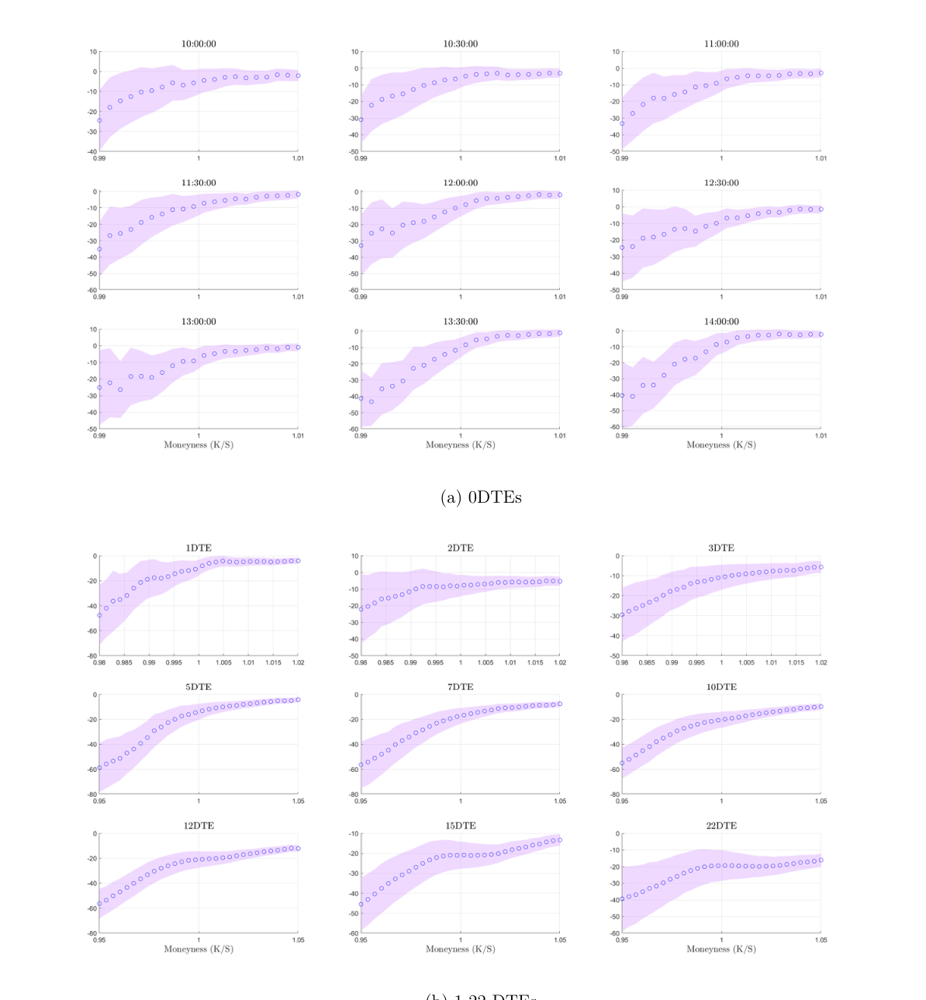

Call/put returns และ upside risk
paper ใช้ average option returns เป็นหลักฐานทางอ้อมของ pricing kernel
call returns
0DTE calls มี average returns ต่ำ และยิ่ง strike สูงยิ่งติดลบ นี่แปลว่าตลาดตั้งราคา payoff ตอนตลาดขึ้นแรงไว้แพงมาก ผู้ซื้อ call จึงได้ผลตอบแทนคาดหวังต่ำ

put returns
puts ก็ติดลบโดยเฉพาะ OTM puts แปลว่ายังมี compensation สำหรับ downside risk แต่ paper เน้นว่า OTM call returns แย่กว่า OTM puts ใน 0DTE

ถามตัวเอง
- ถ้า call buyer เฉลี่ยขาดทุน แปลว่า call ถูกหรือแพงเมื่อเทียบกับ payoff
- ทำไมผลของ OTM calls สำคัญต่อคำว่า upside risk